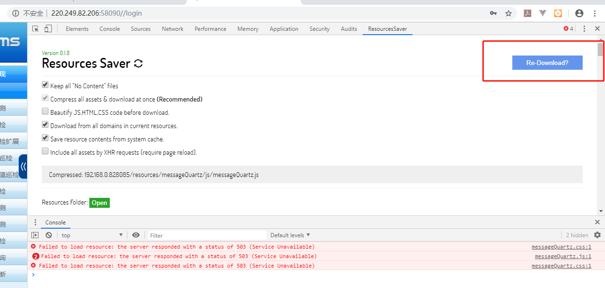

原文出处:本文由博客园博主JerryMouseLi提供。
原文连接:https://www.cnblogs.com/JerryMouseLi/p/11113756.html
原文连接:https://www.cnblogs.com/JerryMouseLi/p/11113756.html
chrome浏览器 开发者工具F12中某网站的sources下的源码如何批量保存
1. 常用保存Sources源码的两种方法
1.1单个文件
可以直接右键另存为
具体如下：
1.2 单个页面
保存网页，就会把引用到的所有文件下载下来。
2. 问题
如果页面很多，文件也很多，静态资源也很多，那么得一个一个去下载么？
你如果想这么干就这么干，我可不想。
3.解决方案
用谷歌的Save All Resources插件，一键下载Sources源码。

用插件下的Resources Saver功能，点击Download即可

下载后之后如下图所示：